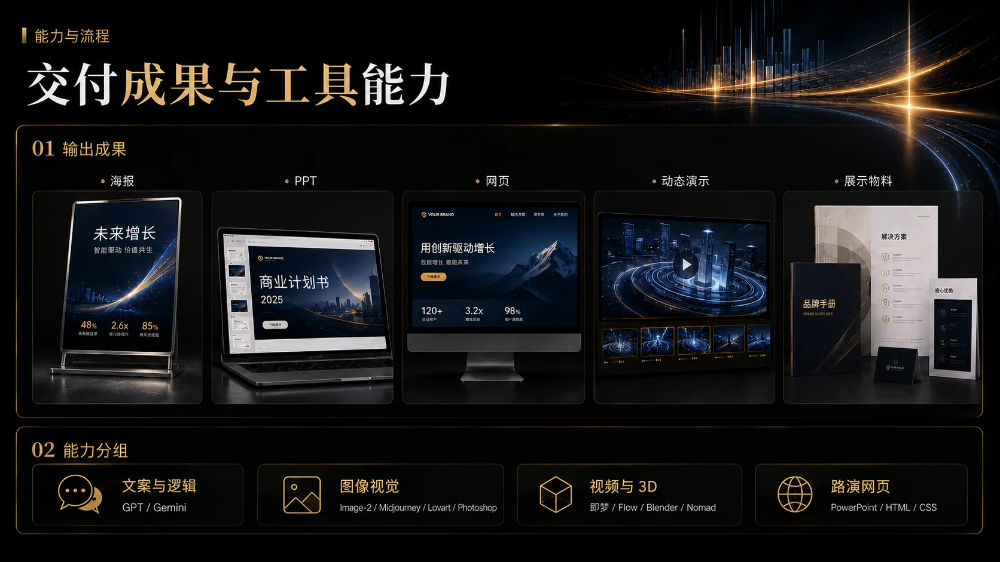
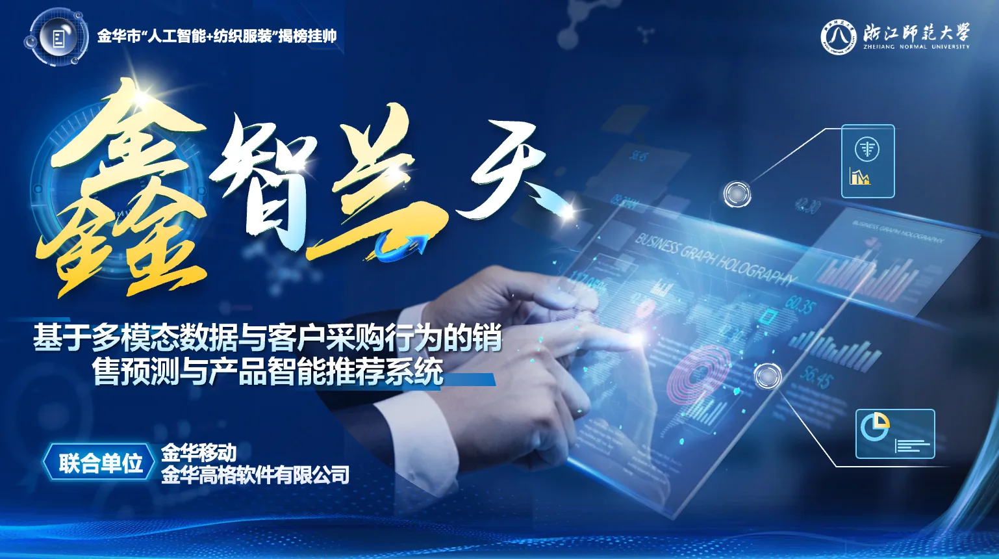
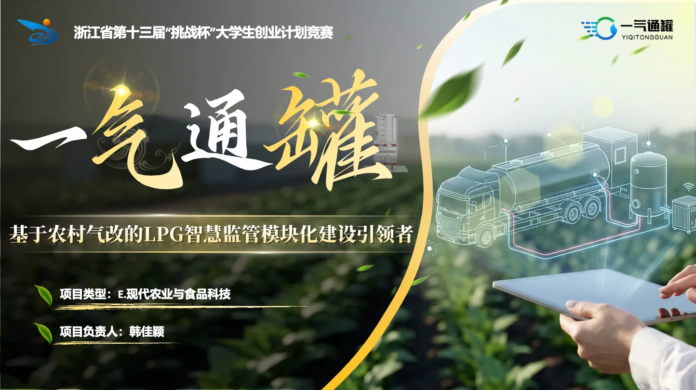
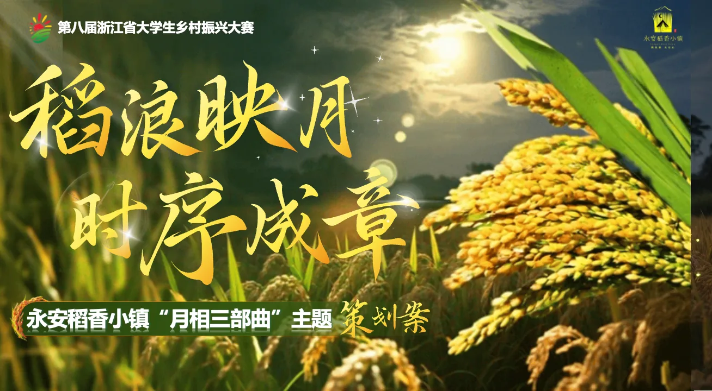
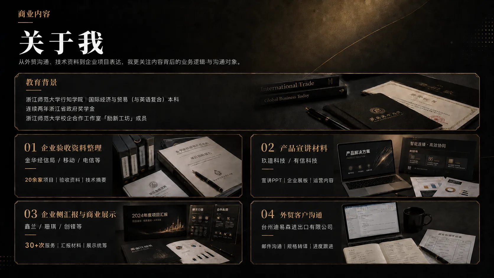
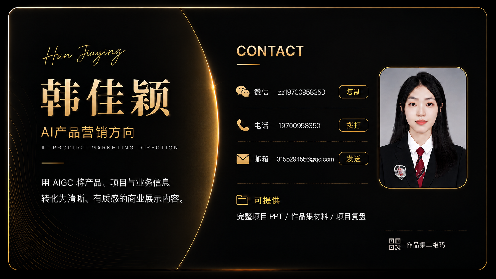

产品价值难表达
技术参数和业务优势分散在资料里，客户很难快速看懂“为什么需要”。
Before Workflow
面对工业制造、B2B 产品与企业方案，我关注的是如何借助 AIGC，把产品资料、业务卖点和应用场景转化为销售能讲、客户能懂、项目能复用的内容资产。
技术参数和业务优势分散在资料里，客户很难快速看懂“为什么需要”。
资料、脚本、视觉和物料各自推进，每一步都需要重新组织表达。
方案有内容，但缺少场景化表达，难以直接支撑路演、销售沟通和客户决策。
02 内容工作流
01
从产品资料、客户场景和销售目标中提炼痛点、卖点与受众，明确内容表达方向。
痛点 / 卖点 / 受众
以金华玖蕴科技有限公司为例，展示从业务理解、脚本重构到 AIGC 营销资产交付的完整工作流。
Selected Work
三组代表项目分别对应跨境外贸销售展示、B2B 技术方案转译与文旅品牌内容策划，重点呈现从业务信息拆解到内容资产交付的完整表达能力。

项目封面预留｜鑫智兰天跨境外贸 / AI虚拟推销员 / 3D面料展示跨境外贸 / AI虚拟推销员 / 3D面料展示
通过 AI 虚拟推销员、3D 面料展示与动态演示，重构纺织外贸客户展示链路。
我的角色：项目策划｜AI虚拟推销员IP孵化｜3D面料展示｜动态演示视频｜路演PPT视觉统筹
工具与产出：GPT / Gemini / Blender / Flow / 路演PPT / 3D面料展示 / AI虚拟推销员IP
关键成果

项目封面预留｜一气通罐B2B产品 / 技术转译 / 路演转化B2B产品 / 技术转译 / 路演转化
将复杂的 LPG 智慧监管技术方案，转化为可理解、可展示、可合作的商业表达。
我的角色：技术逻辑转译｜业务流程重构｜AI视觉产出｜移动端原型展示｜路演内容呈现
工具与产出：GPT / AI绘图 / HTML / CSS / 移动端原型 / 路演PPT / 科研示意图 / 产品展示图
关键成果

项目封面预留｜永安村乡村振兴品牌内容 / IP孵化 / AI视频文旅品牌 / IP孵化 / AI视觉策划
围绕乡村夜游场景，构建“月相三部曲”主题策划与文旅品牌视觉叙事。
我的角色：场景化商业策划｜品牌IP孵化｜AI宣传动画制作｜路演视觉内容统筹
工具与产出：GPT / AI绘图 / 即梦 / Flow / Photoshop / 品牌IP / 宣传动画 / 路演PPT
关键成果
以下案例与视觉材料主要由本人独立完成或主导完成，涉及企业信息已做必要脱敏处理。
Case Library
这里收录更多企业方案、技术表达与申报展示材料节选，作为代表项目之外的内容资产样本库。
部分信息已做脱敏处理，当前仅展示可公开的页面与动态片段。
如果你希望了解完整案例、讨论项目合作，或需要进一步查看可公开材料，我可以围绕代表项目、内容资产与工作流做更完整说明。
AI 产品营销 / B2B 内容营销 / 解决方案表达 / AIGC 内容资产制作与项目展示支持

联系卡片图片位建议使用真实二维码资源